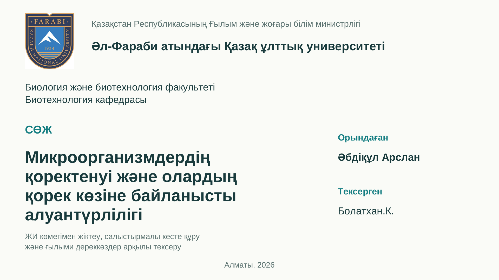
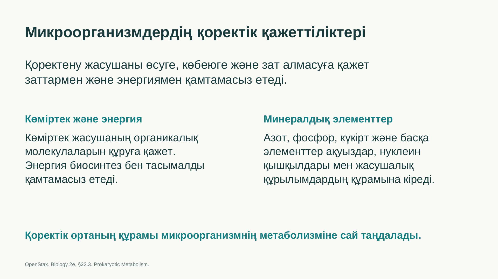
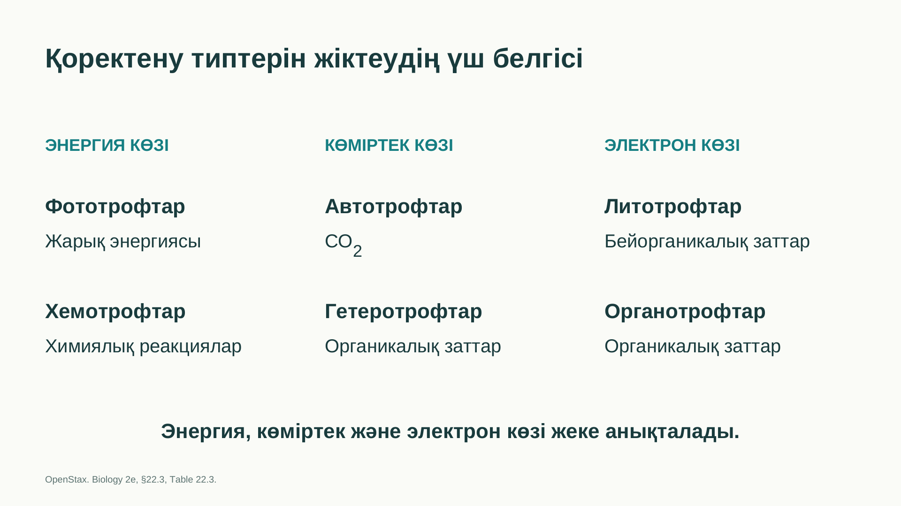
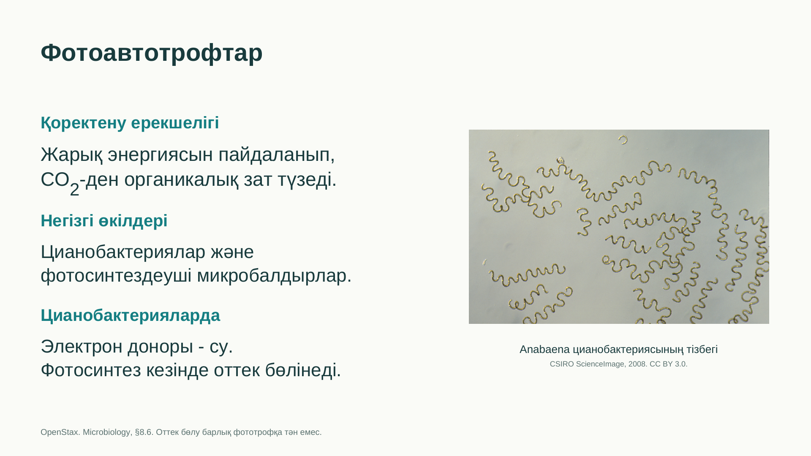
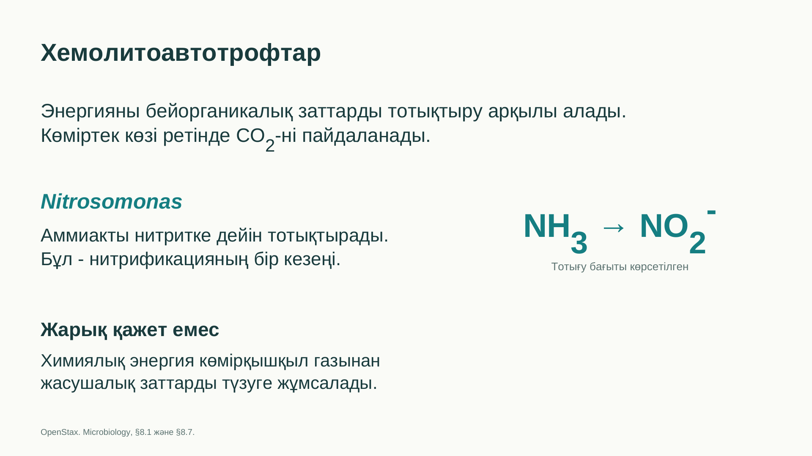
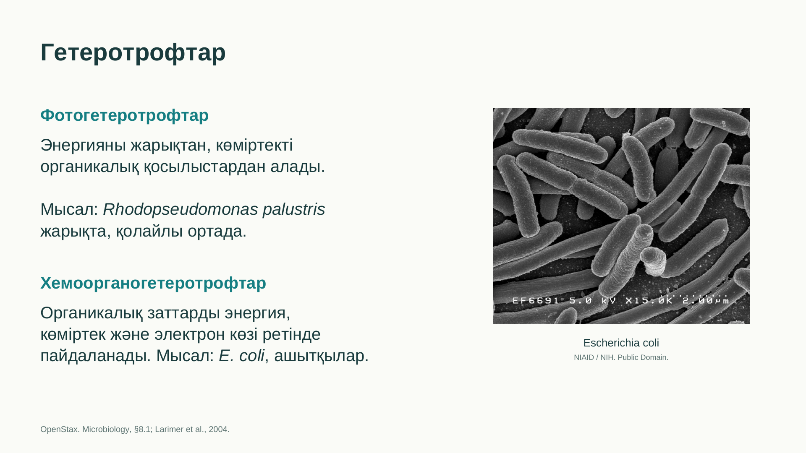
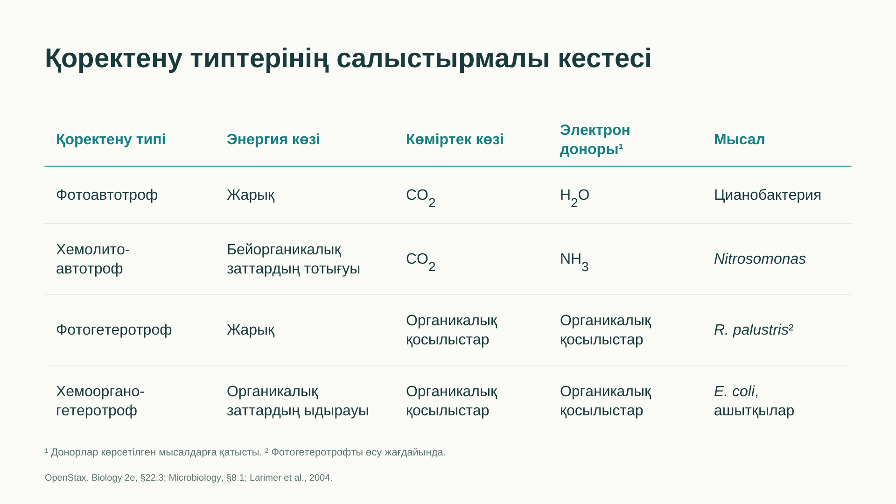
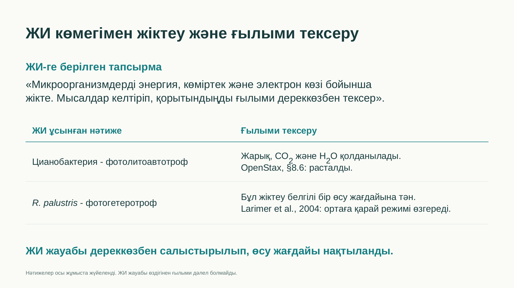
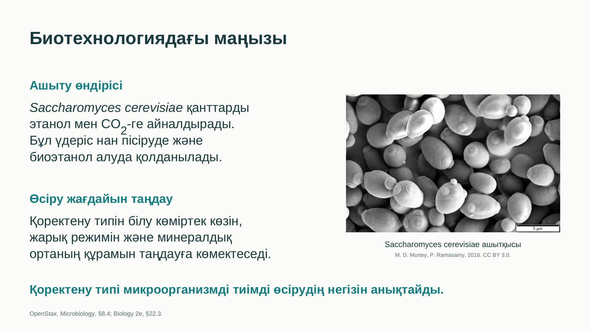
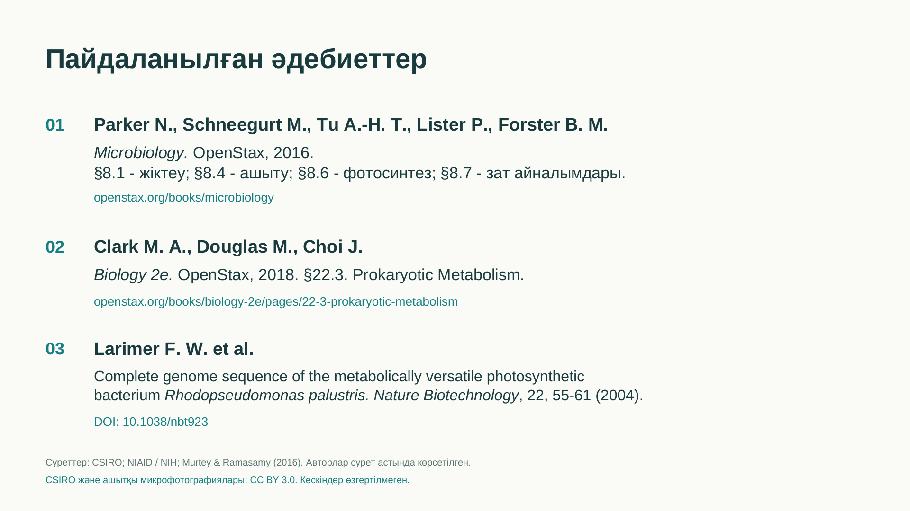

Қазақстан Республикасының Ғылым және жоғары білім министрлігі
Әл-Фараби атындағы Қазақ ұлттық университеті
Биология және биотехнология факультеті
Биотехнология кафедрасы
СӨЖ
Микроорганизмдердің
қоректенуі және олардың
қорек көзіне байланысты
алуантүрлілігі
ЖИ көмегімен жіктеу, салыстырмалы кесте құру
және ғылыми дереккөздер арқылы тексеру
Орындаған
Әбдіқұл Арслан
Тексерген
Болатхан.К.
Алматы, 2026

Микроорганизмдердің қоректік қажеттіліктері
Қоректену жасушаны өсуге, көбеюге және зат алмасуға қажет
заттармен және энергиямен қамтамасыз етеді.
Көміртек және энергия
Көміртек жасушаның органикалық
молекулаларын құруға қажет.
Энергия биосинтез бен тасымалды
қамтамасыз етеді.
Минералдық элементтер
Азот, фосфор, күкірт және басқа
элементтер ақуыздар, нуклеин
қышқылдары мен жасушалық
құрылымдардың құрамына кіреді.
Қоректік ортаның құрамы микроорганизмнің метаболизміне сай таңдалады.
OpenStax. Biology 2e, §22.3. Prokaryotic Metabolism.

Қоректену типтерін жіктеудің үш белгісі
ЭНЕРГИЯ КӨЗІ
Фототрофтар
Жарық энергиясы
Хемотрофтар
Химиялық реакциялар
КӨМІРТЕК КӨЗІ
Автотрофтар
CO2
Гетеротрофтар
Органикалық заттар
ЭЛЕКТРОН КӨЗІ
Литотрофтар
Бейорганикалық заттар
Органотрофтар
Органикалық заттар
Энергия, көміртек және электрон көзі жеке анықталады.
OpenStax. Biology 2e, §22.3, Table 22.3.

Фотоавтотрофтар
Қоректену ерекшелігі
Жарық энергиясын пайдаланып,
CO2-ден органикалық зат түзеді.
Негізгі өкілдері
Цианобактериялар және
фотосинтездеуші микробалдырлар.
Цианобактерияларда
Электрон доноры - су.
Фотосинтез кезінде оттек бөлінеді.
Anabaena цианобактериясының тізбегі
CSIRO ScienceImage, 2008. CC BY 3.0.
OpenStax. Microbiology, §8.6. Оттек бөлу барлық фототрофқа тән емес.

Хемолитоавтотрофтар
Энергияны бейорганикалық заттарды тотықтыру арқылы алады.
Көміртек көзі ретінде CO2-ні пайдаланады.
Nitrosomonas
Аммиакты нитритке дейін тотықтырады.
Бұл - нитрификацияның бір кезеңі.
NH3 → NO2
-
Тотығу бағыты көрсетілген
Жарық қажет емес
Химиялық энергия көмірқышқыл газынан
жасушалық заттарды түзуге жұмсалады.
OpenStax. Microbiology, §8.1 және §8.7.

Гетеротрофтар
Фотогетеротрофтар
Энергияны жарықтан, көміртекті
органикалық қосылыстардан алады.
Мысал: Rhodopseudomonas palustris
жарықта, қолайлы ортада.
Хемоорганогетеротрофтар
Органикалық заттарды энергия,
көміртек және электрон көзі ретінде
пайдаланады. Мысал: E. coli, ашытқылар.
Escherichia coli
NIAID / NIH. Public Domain.
OpenStax. Microbiology, §8.1; Larimer et al., 2004.

Қоректену типтерінің салыстырмалы кестесі
Қоректену типі
Энергия көзі
Көміртек көзі
Электрон
доноры¹
Мысал
Фотоавтотроф
Жарық
CO2
H2O
Цианобактерия
Хемолито-
автотроф
Бейорганикалық
заттардың тотығуы
CO2
NH3
Nitrosomonas
Фотогетеротроф
Жарық
Органикалық
қосылыстар
Органикалық
қосылыстар
R. palustris²
Хемооргано-
гетеротроф
Органикалық
заттардың ыдырауы
Органикалық
қосылыстар
Органикалық
қосылыстар
E. coli,
ашытқылар
¹ Донорлар көрсетілген мысалдарға қатысты. ² Фотогетеротрофты өсу жағдайында.
OpenStax. Biology 2e, §22.3; Microbiology, §8.1; Larimer et al., 2004.

ЖИ көмегімен жіктеу және ғылыми тексеру
ЖИ-ге берілген тапсырма
«Микроорганизмдерді энергия, көміртек және электрон көзі бойынша
жікте. Мысалдар келтіріп, қорытындыңды ғылыми дереккөзбен тексер».
ЖИ ұсынған нәтиже
Ғылыми тексеру
Цианобактерия - фотолитоавтотроф
Жарық, CO2 және H2O қолданылады.
OpenStax, §8.6: расталды.
R. palustris - фотогетеротроф
Бұл жіктеу белгілі бір өсу жағдайына тән.
Larimer et al., 2004: ортаға қарай режимі өзгереді.
ЖИ жауабы дереккөзбен салыстырылып, өсу жағдайы нақтыланды.
Нәтижелер осы жұмыста жүйеленді. ЖИ жауабы өздігінен ғылыми дәлел болмайды.

Биотехнологиядағы маңызы
Ашыту өндірісі
Saccharomyces cerevisiae қанттарды
этанол мен CO2-ге айналдырады.
Бұл үдеріс нан пісіруде және
биоэтанол алуда қолданылады.
Өсіру жағдайын таңдау
Қоректену типін білу көміртек көзін,
жарық режимін және минералдық
ортаның құрамын таңдауға көмектеседі.
Saccharomyces cerevisiae ашытқысы
M. D. Murtey, P. Ramasamy, 2016. CC BY 3.0.
Қоректену типі микроорганизмді тиімді өсірудің негізін анықтайды.
OpenStax. Microbiology, §8.4; Biology 2e, §22.3.

Пайдаланылған әдебиеттер
01
Parker N., Schneegurt M., Tu A.-H. T., Lister P., Forster B. M.
Microbiology. OpenStax, 2016.
§8.1 - жіктеу; §8.4 - ашыту; §8.6 - фотосинтез; §8.7 - зат айналымдары.
openstax.org/books/microbiology
02
Clark M. A., Douglas M., Choi J.
Biology 2e. OpenStax, 2018. §22.3. Prokaryotic Metabolism.
openstax.org/books/biology-2e/pages/22-3-prokaryotic-metabolism
03
Larimer F. W. et al.
Complete genome sequence of the metabolically versatile photosynthetic
bacterium Rhodopseudomonas palustris. Nature Biotechnology, 22, 55-61 (2004).
DOI: 10.1038/nbt923
Суреттер: CSIRO; NIAID / NIH; Murtey & Ramasamy (2016). Авторлар сурет астында көрсетілген.
CSIRO және ашытқы микрофотографиялары: CC BY 3.0. Кескіндер өзгертілмеген.